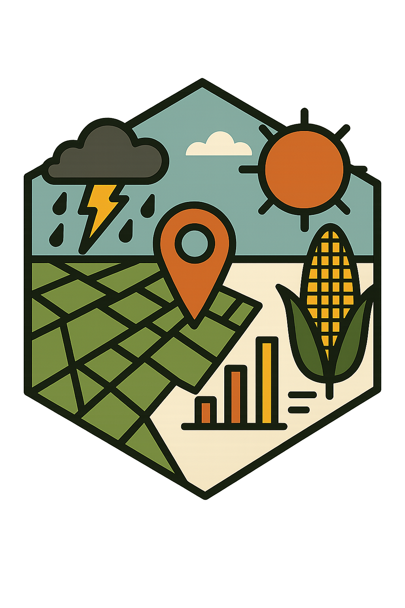

Climate data for economists
c4e is built for economists working with household surveys. From the location of each household and the date of its interview, it computes:
- weather extremes: hot, cold, wet and dry days beyond thresholds or percentiles, their spells, heatwaves and drought indices (SPI, SPEI), over the period before each interview;
- spatial controls: elevation and terrain, agro-ecological zones, distances to roads, markets or borders, population density and climate normals, at the household’s location or for its administrative division.
The result is one row per household, ready to merge with the survey and export to Stata with labelled variables.
Built on climatic4economist
c4e builds on climatic4economist (hence the name, c4e) and keeps what it does, while improving two things:
- The flow between steps. Tables carry their context from one step to the next: the variable, its unit, the time step, and the thresholds, percentiles and spell lengths used. A value given once is not typed again, and every table can print the steps that produced it.
- The safeguards. Units are checked and converted where they are clearly meant, data that do not match a preset are refused with a fix, windows short of data give missing values rather than zeros, large jobs are split to fit in memory, and a coefficient of variation of temperatures is computed on kelvin.
climatic4economist stays available unchanged for existing scripts.
Status: under development. The design and progress are in
dev/PLAN_v2.mdanddev/LOG_v2.md.
📘 Features
-
One call per question:
weather_extremes(),climate_indices(),static_controls()andtime_varying_controls()run the whole chain from a survey and a raster, with named presets (list_presets()), a dry run, and step-by-step progress -
Maps and grid panels:
grid_indicators()andgrid_controls()compute the same indicators and controls for every cell of a raster, block by block, and write GeoTIFFs that keep their context - Read climate rasters with their dates, unit and variable (ERA5, CHIRPS, WFDE5, GAEZ and your own sources)
- Convert units, including rates per day, month or year
- Extract at survey locations, buffers, polygons or cells, with CRS checks
- Daily extremes: thresholds, percentiles, spells, heatwaves, custom conditions
- Standardised indices (SPI, SPEI) and climatic parameters, with coefficients of variation of temperatures computed on kelvin
- Window summaries before each interview: lags, seasons, fixed periods, time since an event, with a minimum coverage
- Stata export with variable labels and a codebook; table checks and summaries
- Memory-aware: large jobs split automatically, with progress messages
🚀 In one call
survey <- read.csv(system.file("extdata", "survey.csv", package = "c4e"))
survey$interview <- as.Date(survey$interview)
hot <- c4e::weather_extremes(
survey,
system.file("extdata", "tmax_daily.tif", package = "c4e"),
id = hhid, interview = interview,
preset = "heat" # days above 30 and 35 C, and their spells
)
c4e::c4e_history(hot) # the equivalent step-by-step chain
c4e::write_stata(hot, "hot_days.dta", codebook = TRUE)🔧 Step by step
tmax <- c4e::read_climate(
system.file("extdata", "tmax_daily.tif", package = "c4e"))
coord <- c4e::prepare_coord(survey, lat_var = lat, lon_var = lon,
id = hhid, interview = interview)
points <- c4e::georef_coord(coord)
hot_days <- c4e::extract_by_coord(tmax, points) |>
c4e::convert_unit("C") |>
c4e::calc_threshold_day(above = c(30, 35)) |>
c4e::calc_spell() |>
c4e::summarise_by_interview(coord, x = _, window = c4e::window_lag("1 year"))